Genel Bilgiler
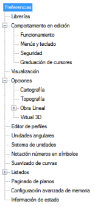Yapılandırma → Tercihler menüsünden, programın arayüzle ilgili yapılandırma seçeneklerinin çoğunu bir araya getiren bir iletişim kutusuna erişilir.
Tercihler, iletişim kutusunun sol tarafında gösterilen ağaç yapısına göre sınıflandırılmıştır.
Gerekli değişiklikler yapıldıktan sonra, bu yapılandırmanın gelecekteki çalışma oturumlarında dikkate alınması için kaydedilmesi gerekir (yapılandırmanın belirli bir projeye mi yoksa herhangi bir projeye mi yönelik olduğuna bağlı olarak sırasıyla [Yerel Kaydet] veya [Genel Kaydet] butonu). Ardından, değişikliklerin etkili olması için [Tamam]'a basılacaktır.
Yerel yapılandırma aynı çalışma klasörüne, ispol.cfg dosyasına kaydedilir ve genel yapılandırma programın kütüphanesi içine (varsayılan olarak C:\ISPOL\LIB'de), istram.cfg dosyasına kaydedilir.
Başlatıldığında, ISTRAM®/ISPOL® bu yapılandırmaların varlığını kontrol eder. Proje klasöründe ispol.cfg dosyasının bulunduğunu görürse, o yapılandırmayla başlar; aksi takdirde, genel yapılandırma dosyasını aramaya çalışır ve o da yoksa, varsayılan yapılandırmayla başlar.
Program ayrıca, program yapılandırmasını, kullanıcının seçtiği kütüphanede oluşturulacak bağımsız bir dosyaya (.cfa uzantılı) [Farklı Kaydet] seçeneği ile kaydetme imkanı da sunar; böylece istenildiğinde [Yükle] seçeneği ile geri yüklenebilir.
Kütüphaneler
Kütüphanelerin kullanımı ve yapılandırılması, kılavuzun bu bölümünde açıklanmaktadır.
Düzenleme Sırasındaki Davranış
Bu bölüm, programın bazı çizim, seçim, düzenleme vb. seçenekleri açısından çalışma moduna atıfta bulunur.
Varsayılan olarak, ilgili seçeneklerin davranışının mümkün olduğunca alışılmış olması için yapılandırılmıştır, ancak belirli durumlarda bunlardan bazılarının değiştirilmesinin uygun olabileceği de bir gerçektir.
İşleyiş
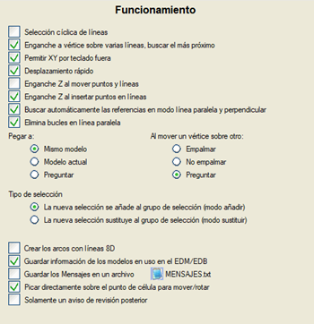Seçenekler şunlardır:
- Döngüsel çizgi seçimi: Eğer seçim penceresinden birden fazla çizgi geçiyorsa, en son oluşturulan veya veri dosyasındaki sıraya göre en sonuncusu seçilir, çünkü program son çizgiden geriye doğru analiz etmeye başlar. Ancak bu seçenek etkinleştirilirse, program son seçilen çizginin önünden geriye doğru başlar, bu nedenle aynı noktaya birkaç kez tıklanırsa, o noktadan geçen farklı çizgiler sırayla seçilir.
- Birden çok çizgi üzerinde köşe noktası yakalama, en yakınını bul: Köşe noktası yakalama etkin olduğunda ve yakalama penceresinden birden fazla çizgi geçtiğinde, köşe noktası en yakın olan çizgi seçilecektir.
- Klavye ile ekran dışı X,Y girişine izin ver: Bu seçenek etkinleştirilirse, ekranda gösterilen alanın dışındaki mutlak koordinatların klavyeden girilmesine izin verilir.
- Hızlı kaydırma: Farenin tekerleği/orta tuşu ile kaydırma yaparken çizimi optimize eder.
- Noktaları ve çizgileri taşırken Z yakalama: Bu seçenek etkinleştirilmişse, bir sembolü veya bir çizgiyi taşırken, yer değiştirme 3D olacaktır, yani herhangi bir yakalama türü etkinse kot dikkate alınır. Buna karşılık, devre dışı bırakılırsa, hareket yalnızca yakalama tarafından okunan kottan bağımsız olarak XY düzleminde olacaktır.
- Noktaları ve çizgileri eklerken Z yakalama: Devre dışı bırakılırsa, etkin bir yakalama ile çizgilere nokta eklerken yakalamanın kotu alınmaz, sadece X ve Y koordinatı alınır (Noktaları ve çizgileri taşırken Z yakalama seçeneğine benzer şekilde çalışır).
- Paralel ve dik çizgi modunda referansları otomatik olarak bul: Etkinleştirildiğinde, çizgi modu etkinken sadece üzerlerinden geçerek nesnelere paralel veya dik olanı otomatik olarak arar. Devre dışı bırakılırsa, her köşe noktasından önce nesnenin seçilmesi istenir.
- Paralel çizgide döngüleri kaldır: Bu seçenek etkinken, bir paralel çizginin içbükeylikleri nedeniyle belirli bir mesafeden sonra oluşturduğu döngüler, resimde gösterildiği gibi önlenir:
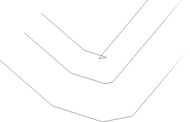
Döngülü Paralel
|
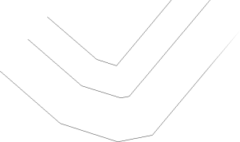
Döngüsüz Paralel
|
- Yapıştırılacak yer: Daha önce kesilmiş veya kopyalanmış bir nesne seçimi yapıştırıldığında, bu yapıştırma geldiği aynı modele, mevcut modele veya kullanıcının belirttiği modele gidebilir.
- Bir köşe noktasını diğerinin üzerine taşırken, program iki çizgiyi birleştirebilir (veya bir çizginin başlangıç ve bitiş köşe noktaları ise çizgiyi kapatabilir), hiçbir şey yapmayabilir veya kullanıcıya sorabilir.
- Seçim Türü: Buradan, yeni seçimin mevcut seçime eklenip eklenmeyeceği veya onun yerini alıp almayacağı ayarlanır. Bu tercih, Düzenle → Seç menüsünden ve içerik menüsündeki Seç seçeneğinden de ayarlanabilir.
- Yayları 8D çizgilerle oluştur: Bu seçenek etkinleştirilirse, polilineler, daireler vb. 8D çizgiler olarak çizilir.
- Kullanımdaki modellerin bilgisini EDM/EDB'de kaydet: Bu seçenek etkinleştirildiğinde, kullanımda olan modellerin bilgisi .edm/.edb dosyalarına kaydedilir. Bu şekilde, dosya yeniden yüklendiğinde modellerin bilgisi de güncellenir.
- Mesajları bir dosyaya kaydet: Tüm mesajları proje klasöründeki MESAJLAR.txt adlı bir dosyada saklar.
- Taşımak/döndürmek için doğrudan hücre noktasına tıkla: Etkinse, bir hücrenin bir noktasını taşımak veya döndürmek için üzerine tıklayıp taşımak/döndürmek yeterlidir. Aksi takdirde, noktalarını taşımadan önce hücrenin seçilmesi gerekir.
- Daha sonraki revizyon için yalnızca bir uyarı: Bu seçenek etkinleştirilirse ve çalışılan revizyondan daha yeni bir revizyonda kaydedilmiş bir proje yüklenirse, yalnızca bir uyarı gösterir.
Menüler ve Klavye
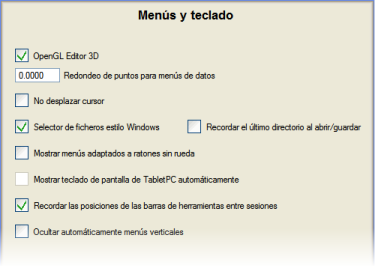Seçenekler şunlardır:
- OpenGL 3D Editör: VIRTUAL 3D modülünün 3D editöründe OpenGL aracılığıyla sanal görüntülemeyi etkinleştirir.
- Veri menüleri için nokta yuvarlama: Fare ile grafik olarak elde edilen noktaların koordinatlarına atıfta bulunur ve 0.0 değerinin yuvarlama yapılmadığını, 0.001 değerinin üçüncü ondalık basamağa yuvarlandığını vb. belirtecek şekilde ayarlanmasına olanak tanır.
- İmleci kaydırma: Etkinleştirilirse, dikey menülerin açılır listelerinde imleç açılır listenin merkezine kaymaz.
- Windows dosya seçicisi: Bu seçenek devre dışı bırakılırsa, bir dosya yüklerken veya kaydederken kullanılan dosya seçicisi, Windows® seçicisi yerine programın kendi seçicisi olur.
- Açarken/kaydederken son dizini hatırla: Bu seçenek etkinse, dosya seçici, dosyaların en son açıldığı veya kaydedildiği klasörü hatırlar. Varsayılan olarak bu seçenek devre dışıdır.
- Tekerleksiz farelere uyarlanmış menüleri göster: Bu seçenek etkinleştirildiğinde, o an tekerlekli bir fare kullanmayan bilgisayarlarda yaygın işlemleri kolaylaştırmak amacıyla bazı menüler ve program davranışları değiştirilir. Örneğin, yakınlaştırma/uzaklaştırma ve dinamik kaydırma işlemleri doğrudan Görünüm menüsünden erişilebilir hale gelir, bu da o an tekerlekli harici bir faresi olmayan dizüstü bilgisayarlarda özellikle kullanışlıdır.
- TabletPC ekran klavyesini otomatik olarak göster: Program bir tablet'te çalıştığını algıladığında, bu tür cihazlara uyarlanmış özel bir klavye ve bazı butonlar gösterir.
- Oturumlar arasında araç çubuklarının konumlarını hatırla: Bu seçenek etkinleştirildiğinde, program kapanırken ekrandaki araç çubuklarının mevcut konumunu kaydeder, böylece bir sonraki oturum açıldığında aynı yerde görünürler.
- Dikey menüleri otomatik olarak gizle: Seçenek etkinleştirildiğinde, programın farklı bölümleriyle ilişkili dikey menüler daraltılmış olarak gösterilir ve fare imlecinin üzerlerinde olup olmamasına bağlı olarak açılır/gizlenir.
Güvenlik
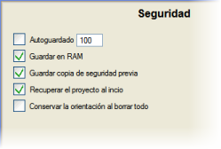Seçenekler şunlardır:
- Otomatik Kaydetme: Varsayılan olarak devre dışı olan bu seçenek, haritanın bir yedek kopyasının otomatik olarak oluşturulması için tıklama sayısını kontrol eder. Bu kopyanın oluşturulması neredeyse anlıktır. Varsayılan olarak, kutucuk etkinleştirilirse, program her 100 fare tıklamasında bir yedek kopya oluşturur. Bu kopya her yapıldığında, mesaj alanında Değişiklikler kaydediliyor... şeklinde bir mesaj görüntülenir.
- RAM'de Kaydet: Bu kutucuk işaretli olduğu sürece, program harita düzenlemeyle ilgili her şey için sistemin ana belleğini (RAM), ikincil belleğe (sabit disk) göre yoğun bir şekilde kullanır, bu da düzenleme sürecini önemli ölçüde hızlandırır. Bu seçeneğin devre dışı bırakılmaması tavsiye edilir.
- Önceki yedek kopyayı kaydet: Bu seçenek devre dışı bırakılırsa, yedek dosyaların kopyası yapılmaz ve dolayısıyla bir sonraki oturumda, önceki oturumun dosyaları değil, kaydedildikleri son oturumun dosyaları geri yüklenir. Bununla iki şey elde edilebilir:
- Eğer çok büyük haritalarla çalışılıyorsa, programı başlatırken yedek dosyaların kopyasını yapmak için bekleme süresi önlenir.
- Sonraki herhangi bir oturum için aynı bilgiyi önceki yedek kopyada sabitleyebilirsiniz.
- Başlangıçta projeyi geri yükle: Bu seçenek işaretliyken (varsayılan), programın bir oturumu başlatıldığında, önceki oturumda mevcut olan veriler (EDM ve güzergah projesi) otomatik olarak geri yüklenir.
- Tümünü silerken yönelimi koru: Yeni, Çizim Aç vb. seçenek kullanıldığı için tüm EDM silindiğinde, program atanmış olan çizimin yönelimini korur.
İmleç Ayarları
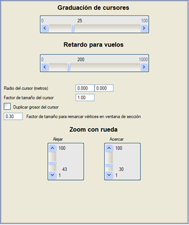Buradan, ok tuşları veya imleçler kullanılarak grafik ekranda yapılan kaydırmaları ve fare tekerleği kullanıldığında yakınlaştırma hızını ayarlamak mümkündür (kaydırıcı İmleç Ayarları).
Uçuşlar için gecikme, bir çizgi üzerindeki hıza veya Görünüm → Uçuş ve Görünüm → 3D Görünüm → UÇUŞ seçeneklerindeki döngüsel uçuşa atıfta bulunur.
İmleç Yarıçapı seçeneği, fare imlecinin etrafında, burada belirlenen yarıçapta bir daire çizer, böylece noktalar arasındaki mesafeler hakkında hızlı bir görsel referans elde edilebilir. İkinci bir İmleç Yarıçapı (metre) mevcuttur. Her iki yarıçap da yapılandırma dosyasından kaydedilir ve geri yüklenir.
İmleç boyutu faktörü, seçim imlecinin boyutunu değiştirmeyi sağlar.
İmleç kalınlığını iki katına çıkar tam olarak belirttiği şeyi yapar: imleci, büyük monitörlere ve yüksek çözünürlüklere sahip sistemlerde daha kolay bulunabilir hale getirmek için kalınlaştırır.
Kesit penceresinde köşe noktalarını vurgulama boyutu faktörü, eksenin enkesitini gösteren pencerelerdeki köşe noktalarının boyutunu tanımlamayı sağlar.
Tekerlek ile Yakınlaştırma bölümünde, ekranda görünen alanın yüzde olarak artırılması (uzaklaştır) veya azaltılması (yakınlaştır) ayarlanır.
Görselleştirme
Aşağıdaki seçenekleri sunar:
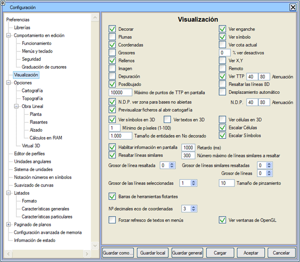
- Koordinatlar: Koordinat takibinin sayısal gösteriminin etkinleştirilmesi.
- Kalınlıklar: Bu kutucuk işaretlendiğinde, ekrandaki çizim çizgi kalınlıklarıyla gösterilir. Kalınlıklarla yeniden çizim daha yavaştır, bu nedenle genellikle devre dışı bırakılması tavsiye edilir.
- Dolgular: Çizgi dolgularının gösterimi.
- Resim: Vektör haritasıyla birlikte işlenen raster resimlerinin sunumunu engeller.
-
Hata Ayıklama: Bir hata ayıklama durumunu etkinleştirir, bu da ISTRAM®/ISPOL®'ün belirli işlemlerinin başlangıç penceresindeki mesajlar aracılığıyla izlenmesine olanak tanır.
- Sonradan Çizim: Bu kutucuk işaretlenmezse, o zaman EDM'ye ait OLMAYAN grafik öğeler (topografik öğeler, plandaki sabit güzergah eksenlerinin gösterimi, tesviye eksenleri,...) çizilmez.
- Yakalamayı Göster: Bu seçenek etkinleştirildiğinde, ekranda yakalanan noktayı veya köşe noktasını takip eden bir artı işareti (X) belirir. Eğer yakalama modu serbest ise, konumu imleçle eş merkezlidir; değilse, imlecin ekran üzerindeki konumuna tıklandığında ortaya çıkacak olan nokta veya köşe noktasına konumlanır.
- Sembolü Göster: Bu seçenek etkinleştirildiğinde, imleç üzerinde yakalama türünü tanımlayan bir sembol belirir: köşe noktası, nokta, kenar, orta nokta, kesişim vb. Çoklu yakalama kullanıldığında çok kullanışlıdır.
- Mevcut Kotu Göster: Yakalamayı Göster ile ilişkilidir, eğer bu seçenek etkinleştirilirse, o zaman yakalanan noktanın veya köşe noktasının kotu fare imlecinin yanında gösterilir.
- Pasifleri Göster %: Bu seçenek, yeniden çizimlerde pasif katmanlarda ve/veya modellerde bulunan öğeleri (çizgiler, noktalar ve metinler) görmeyi sağlar, ancak bunları seçmeye, silmeye veya bir .edm/.edb'ye kaydetmeye izin vermez. Kutucuğa, pasif nesnelerin ekranda gösterildiği soluklaştırma değerine karşılık gelen yüzde olarak bir değer girilebilir; öyle ki %0, programa bunları ekranda göstermemesini belirtir.
- Tutamaç Boyutu: Seçilen grafik nesnelerin veya fare imlecinin üzerinde bulunduğu nesnenin köşe noktalarını ve yerleştirme noktalarını vurgulayan tutamaçların piksel cinsinden boyutunu ayarlamayı sağlar.
- X,Y Göster: Fare imlecinin gösterimine X ve Y koordinatları eşlik eder, GÜZERGAH PROJESİ'nin PROFİL menüsünde KM,Z ve coğrafi koordinatlarda çalışılması durumunda enlem ve boylam görüntülenir.
- Uzak Bağlantı: Bu seçenek, program bir ağ üzerinden uzaktan çalıştırıldığında sistemi yavaşlatan gereksiz işlemleri (menülerdeki animasyonlar vb.) engeller.
- SAM'ı Göster: TOPOGRAFYA menüsünden çıkıldığında, düğümler, ağlar veya üçgenler kaldırılmaz. Bu bilgi, örneğin ENKESİTLER menüsünde (GÜZERGAH PROJESİ modülü) arazi enkesitlerini (TTP seçeneği) çıkarmak için kullanılabilecek bir sayısal arazi modeli oluşturur. Bu kutucuk, bu ağların TOPOGRAFYA menüsü dışında görüntülenmesini etkinleştirmeyi/devre dışı bırakmayı sağlar. Açıkçası, TOPOGRAFYA'ya geri dönüldüğünde bu bilgi kullanıcı için hala mevcuttur. Ayrıca, mevcut .ttp'ye (sağdaki kutucuk) yüklenen diğer .ttp dosyalarının (soldaki kutucuk) soluklaştırmasından farklı bir soluklaştırma yüzdesi uygulayabiliriz.
- 8D Çizgileri Vurgula: Bu tercih etkinleştirildiğinde, 8D çizgiler ekranda dikkat çekici bir renk ve kalınlıkla vurgulanarak gösterilir. Bu seçenek etkin olduğunda, yeniden çizim hızı daha yavaştır.
- Otomatik Kaydırma: Bu seçenek etkinken, imleci grafik penceresinin kenarlarına yakın bir yere getirdiğinizde, çizim otomatik olarak kaydırılır ve imlecin altındaki noktayı pencerenin merkezine getirmeye çalışır. İki katsayı içerir:
- İlki, seçeneğin hassas olduğu kenarlara olan mesafeyi ayarlamayı sağlar.
- İkincisi, çizimin ne kadar kaydırılacağını ayarlar.
- Harita açarken dosyaları önizle: Bu tercih etkinleştirilmişse, bir .edm/.edb açmak için dosya seçici açıkken, program o an seçili olan dosyaya karşılık gelen çizimin bir minyatürünü ekranda gösterir.
- Basit Gösterim modunda nesne boyutu: Basit Gösterim modunda sembollerin ve metinlerin işaretleri için temel boyutu, kağıt birimi cinsinden değiştirmeyi sağlar.
- Hücreleri Ölçekle ve Sembolleri Ölçekle: Etkinleştirildiğinde, ISTRAM'ın gösterim ölçeğini değiştirirsek, bu öğeler boyutlarını ve göreli konumlarını haritanın geri kalanıyla koruyarak ölçeklenir (bir fotoğraf küçültmesi yapılıyormuş gibi). ÇOK ÖNEMLİ: Örneğin .ALI tipi bir etiketleme gösterileceği zaman, eğer .ALI dosyası 1:1000 Ölçeği için hazırlanmışsa, etiketleme o ölçekte oluşturulur ve sonra ölçek değiştirilir (örneğin 1:5000'e). Seçeneklerin oluşturmadan önce mi sonra mı etkinleştirildiği önemli değildir.
- Ekran bilgisini etkinleştir: Bu kutucuk etkin olduğu sürece, fare imlecinin üzerinde bulunduğu grafik nesne hakkında ekranda bilgi gösterilir. Bu bilgi, imleç nesne üzerinde gecikme'de belirtilen süre (milisaniye cinsinden) boyunca hareketsiz kaldığında görünecektir. Özellikle çok büyük çizimlerle çalışırken bu değerin ÇOK düşük olmaması tavsiye edilir, çünkü programda yavaşlamalara neden olabilir. Ekran bilgisi, standart araç çubuğundaki
 simgesi kullanılarak geçici olarak devre dışı bırakılabilir. simgesi kullanılarak geçici olarak devre dışı bırakılabilir.
- Benzer çizgileri vurgula: Bir nesnenin bilgisi ekranda gösterildiğinde, bu seçenek etkinse, aynı tipteki tüm çizgiler de vurgulanır (L26, L27, L34 ve L36 tipi çizgiler durumunda aynı kotta olanlar). Ayrıca, kullanıcı bir .dxf/.dwg veya .dgn dosyası içe aktarıyorsa, vurgulananlar aynı katmana veya seviyeye ait olan çizgilerdir. Eğer vurgulanacak çizgi sayısı belirtilen değeri aşarsa, verimlilik nedenleriyle vurgulanmazlar.
- Vurgulanan çizgi kalınlığı: İmleci üzerine getirdiğimizde vurgulanan (ve hakkında bilgi gösterilen) bir çizginin gösterildiği kalınlığı değiştirir.
- Vurgulanan benzer çizgilerin kalınlığı: Vurguladığımız çizgiye benzer olan (yani, imleci bir süre üzerinde bıraktığımız) çizgilerin gösterildiği kalınlığı değiştirir.
- Çizgi kalınlığı: Tüm çizgilerin varsayılan olarak gösterildiği kalınlığı değiştirir.
- Seçilen çizgilerin kalınlığı: Çizgiler seçildiğinde gösterildikleri kalınlığı değiştirir.
- Yüzen araç çubukları: Bu kutucuk etkinleştirilmişse, araç çubukları, programın çalışma alanının dışına bile, tüm ekranda hareket ettirilebilir. İşaretli değilse, çubukların hareketi yalnızca çalışma alanıyla sınırlı kalır.
- Koordinat gösteriminin ondalık basamak sayısı: Koordinat gösterim penceresinde kaç ondalık basamak gösterilmek istendiğini belirtir. Varsayılan olarak 3 ondalık basamaktır ve 0 ila 6 ondalık basamak arasında yapılandırılabilir.
- Y.N.B.: Açık olmayan nirengiler için alanı gör, açık olmasa bile beyan edilen yoğun nokta bulutunun kapladığı alanı görme imkanını etkinleştirmeye/devre dışı bırakmaya olanak tanır, mevcut Y.N.B.'nin soluklaştırma ve soluklaştırma değerleri tanımlanabilir.
Seçenekler
Topografya
SAYISAL HARİTA modülünün TOPOGRAFYA seçenekleri, Topografya seçenekleri bölümünde uygun şekilde açıklanmıştır.
Güzergah Projesi
PLAN
GÜZERGAH PROJESİ modülünün PLAN seçenekleri, Plan görüntüleme seçenekleri bölümünde uygun şekilde açıklanmıştır.
PROFİL (KIRMIZI HAT)
GÜZERGAH PROJESİ modülünün PROFİL seçenekleri, Profil görüntüleme seçenekleri bölümünde uygun şekilde açıklanmıştır.
BOYKESİT
GÜZERGAH PROJESİ modülünün BOYKESİT seçenekleri, Boykesit görüntüleme seçenekleri bölümünde uygun şekilde açıklanmıştır.
Enkesit Editörü
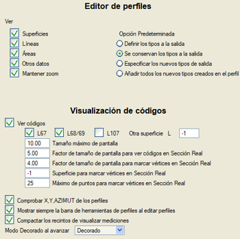Buradan, enkesit düzenlemesi sırasında, eğer mevcutsa, hangi bilgilerin görüneceği ayarlanır:
- Yüzeyler
- Çizgi Tipleri
- Alanlar
- Diğer Veriler
Ayrıca aşağıdaki seçenekler de mevcuttur:
- Yakınlaştırmayı koru: Enkesit dosyasında ileri veya geri giderken aynı pencereyi eksene olan mesafe - profile göreceli kot koordinatlarında tutmayı sağlar (yapılan tüm yakınlaştırmaları korur).
- Varsayılan seçenek: düzenle, kırp, tamamla, en alçak ve en yüksek gibi işlemlerle gösterilen iletişim kutusunda varsayılan olarak hangi seçeneğin seçili görüneceğine atıfta bulunur.
- Kodları göster: İşaretli çizgi tiplerine karşılık gelen kodları görüntülemeyi sağlar (L67 profile karşılık gelen, L68/69 alt temel+şevlere ve uygun olmayan yarmaya karşılık gelen ve L107 ile aşırı kazının temsil edildiği). Ayrıca, kodlarını görüntülemek için başka bir yüzeye karşılık gelen ek bir çizgi tipi belirtmek de mümkündür (Diğer yüzey L seçeneği).
- Maksimum ekran boyutu: Gerçek metre cinsinden maksimum ekran genişliği; bu değerin altındaysa, kodlar görüntülenir.
- Gerçek Kesitte kodları görmek için ekran boyutu faktörü: 0 değeri, kodların her zaman görüleceği anlamına gelir. Değeri artırdıkça, kodların görünmesi için daha fazla yaklaşmak gerekir.
- Gerçek Kesitte köşe noktalarını vurgulamak için ekran boyutu faktörü: 0 değeri, karelerin her zaman görüleceği anlamına gelir. Değeri artırdıkça, karelerin görünmesi için daha fazla yaklaşmak gerekir.
- Gerçek Kesitte köşe noktalarını işaretlemek için yüzey: Bu yüzeyin nokta sayısı kontrol edilmeyecektir.
- Gerçek Kesitte köşe noktalarını işaretlemek için yarı profilin maksimum nokta sayısı
- X, Y ve AZİMUT Kontrolü: GÜZERGAH PROJESİ hesaplamalarında, profildeki eksenin koordinatlarının ve azimutunun plandaki ekseninkiyle eşleştiğini kontrol etmeyi sağlar. Bu seçeneği boru hattı projelerinde devre dışı bırakmak uygundur, çünkü plandaki köşe noktalarında teğetlik olmadığı için farklı azimuta sahip iki profil meydana gelecektir.
- Profilleri düzenlerken her zaman profil araç çubuğunu göster: Bu seçenek etkinse, profil düzenlemesine girildiğinde bu ortama özgü araç çubuğu belirir.
- Ölçümleri görüntüleme kapalı alanlarını sıkıştır: Bu seçenek etkinse, .dar tablosunun ölçümleri bir profilde görüntülendiğinde, alanı tanımlayan kapalı alanlar sıkıştırılır, böylece gri kapalı alanlar (çıkarılacak alanlar) kaldırılır ve bitişik kapalı alanlar birleştirilir.
- İlerlerken Detaylı Gösterim Modu: Profillerde ilerlerken Detaylı Gösterim modunun davranışını belirler:
- Detaylı Gösterim: bir profil ilerletildiğinde, her zaman detaylı gösterimde görünür.
- Basit Gösterim: bir profil ilerletildiğinde, her zaman basit gösterimde görünür.
- Koru: ilerlemeden önceki detaylı/basit gösterim durumunu korur.
- Otomatik: eğer profil semboller içeriyorsa, Detaylı Gösterim modunu etkinleştirir. Değilse, etkinleştirmez.
Açısal Birimler
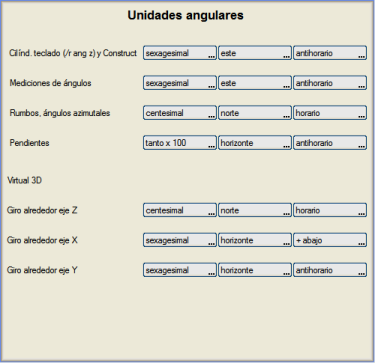Açı elde etme ve ölçme seçenekleri, hem altmışlık (derece), gradyan (grad) hem de radyan cinsinden açılarla çalışmaya olanak tanır.
Ayrıca, açıların ölçüm başlangıcını ve ölçüm yönünü seçme imkanı sunar.
Bu menüden, VIRTUAL 3D modülü için eksenlere göre dönme kriterleri de ayarlanır.
ISTRAM®/ISPOL®'ün açısal birimler hakkında nasıl bilgi verdiğinin yapılandırmasını her zaman bilmenin gerekliliğini vurgulamak gerekir.
Birim Sistemi
Varsayılan olarak ISTRAM®/ISPOL® Metrik Sistemde çalışır:
- Metre cinsinden uzunluklar (m)
- Metrekare cinsinden alanlar (m2)
- Metreküp cinsinden hacimler (m3)
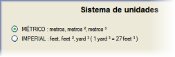Ancak İmparatorluk Sistemini seçmek de mümkündür:
- Fit cinsinden uzunluklar (ft)
- Fit kare cinsinden alanlar (ft2)
- Yarda küp cinsinden hacimler (yd3, 1 yd3 = 27 ft3 eşitliğine göre)
İmparatorluk Sistemi ile çalışırken haritanın fit (ft) cinsinden olduğu varsayılır.
Sembollerde Sayı Gösterimi
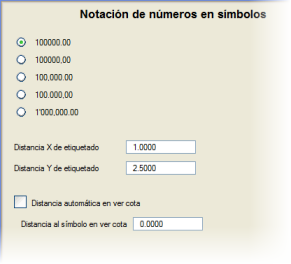Sembollerde (etiketlerde) yazılan reel sayılar için gösterim türünü seçmeyi sağlar.
Bu değerler, enkesitlerin alan ve hacimlerinin sayısal değerlerini de etkiler.
Buradan, Araçlar → Kotlar → Nokta Etiketleme seçeneği kullanıldığında etiketlerin sembole olan mesafesini (X ve Y cinsinden) de yapılandırmak mümkündür.
Kot gösteriminde otomatik mesafe seçeneği etkinleştirildiğinde, program sembollerin kot değerini sembollerin boyutuna göre hesaplanan bir konumda gösterir. Aksi takdirde, bu kot burada belirtilen mesafede (Y cinsinden) gösterilir.
Sembollerin kotunun EDM'de görüntülenmesi, Görünüm → Sembol Kotunu Göster menüsü aracılığıyla sağlanır.
Eğri Yumuşatma
Bu menü, aşağıdaki parametrelere göre eğrilerin gösterimindeki ayrıklaştırmayı kontrol etmeyi sağlar:
- Maksimum yay-kiriş mesafesi (mm), dairelerin ayrıklaştırılmasına atıfta bulunur. Bir dairenin çizimi, bir segmentin bir noktası ile gerçek yay arasındaki maksimum mesafenin bu değeri aşmayacağı şekilde segmentlere dayalı olarak yapılır. Varsayılan olarak, bu değer 0.01 mm düzlem (1:1000 ölçeğinde 1 cm gerçek) olarak ayarlanmıştır.
- Maksimum klotoid segment uzunluğu (mm), güzergah projelerindeki yatay kurplara karşılık gelir.
- Maksimum parabol segment uzunluğu (mm), güzergah projelerindeki düşey kurplara karşılık gelir.
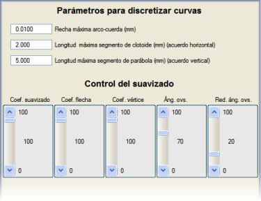
İki maksimum uzunluk parametresi, çok büyük parametrelere sahip kurp durumlarında kullanışlıdır; bu durumlar, çizimde düz çizgiler olarak temsil edilmelerine neden olur ve bu da o bölümlerde köşe noktasıyla ilgili herhangi bir işlemi (köşe noktası yakalama,...) engeller.
Yumuşatma kontrolü ile ilgili olarak, bu menü, eğrilerin yumuşatılmasını çeşitli parametreler aracılığıyla kontrol etmeyi sağlar:
- Yumuşatma katsayısı: Yumuşatılmamış segmente göre uygulanacak kübik parabolün yay-kiriş mesafesinin yüzdesi (varsayılan, %100).
- Yay-kiriş katsayısı: Yumuşatma katsayısı gibi, ancak segmentlerin merkezine doğru daha fazla etkiler (varsayılan, %100).
- Köşe noktası katsayısı: Yumuşatma katsayısı gibidir, ancak segmentlerin kenarlarına doğru daha fazla etkiler (varsayılan, %100).
Üç katsayı birbiriyle yakından ilişkilidir; öyle ki, yumuşatma katsayısında %100 ve diğer ikisi için C değeri, yumuşatma için C değeri ve yay-kiriş ile köşe noktası için %100'e eşdeğerdir ve dolayısıyla aynı etkiyi yaratır.
- 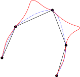Aşma (Overshooting) açısı: Overshooting etkisini önlemek için bir köşe noktasındaki kübik parabolün teğetlerinin düzeltildiği, iki ardışık segment arasındaki açısal değişim. Varsayılan olarak, değeri 70'tir (0.7 radyana eşdeğer). Resimde overshooting etkisinin düzeltilmesi görülebilir.
- Aşma (Overshooting) için açı azaltma katsayısı: Varsayılan olarak %20'dir.
Bir uygulama örneği, bir üçgenlemeden gelen tesviye eğrileri durumunda verilebilir; öyle ki, çizgiler çok yakın ve çok köşeliyse, normal bir yumuşatmanın bazı çizgilerin kesişmesine neden olması mümkündür. Bu, overshooting ile ilgili değerleri değiştirerek, örneğin overshooting açısını 20'ye düşürerek ve overshooting için açı azaltma katsayısını sıfırlayarak kolayca önlenebilir.
Pafta Düzeni
Burada, Yazdırma Seçenekleri bölümünde detaylandırılan pafta yazdırma seçenekleri yer alır.
Gelişmiş Bellek Yapılandırması
Bu iletişim kutusu, ilk olarak sistemin ana belleğinin (RAM) kullanımını bildirir ve yönetir:
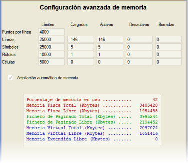
Program, belirtilen sayıda çizgi, çizgi başına köşe noktası, sembol, yazı ve hücre için bellek yönetir ve ayırır; eğer bir değer aşılırsa, "Bellek sınırı aşıldı" türünde bir mesajla bilgilendirilir.
Bir sınıra ulaşıldığında, Otomatik bellek genişletme seçeneği işaretli olmadıkça, o sınıftan daha fazla nesne belleğe yüklemek mümkün değildir. Bu durumda, program bir sınıra ulaşıldığında, sistemden bir ana bellek rezervi genişletmesi talep eder ve ilgili sınırı otomatik olarak artırır.
Bu iletişim kutusu açıldığında, bellekteki nesne sayısı ve belleğin doluluk durumu da gösterilir.
Durum Bilgisi. Mevcut Kotun Değiştirilmesi
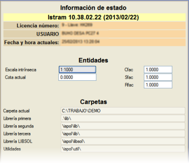Bu menü, Yapılandırma → Durum Bilgisi menüsünden de erişilebilir; programın sürümünü ve derleme gününü, ayrıca lisans numarasını ve ilişkili adını gösterir.
Ayrıca programın bazı değişkenlerinin durumu hakkında bilgi verir: ölçek, mevcut kot, kullanımda olan kütüphanelerin yolları ve hücreler (Cfac), semboller (Sfac) ve yazılar (Rfac) için genel ölçek faktörleri.
Mevcut kotu değiştirmenin başka bir yolu, doğrudan Z koordinatı göstergesine tıklayıp yeni değeri girmektir:

|

 (
( (
( (
( (
(